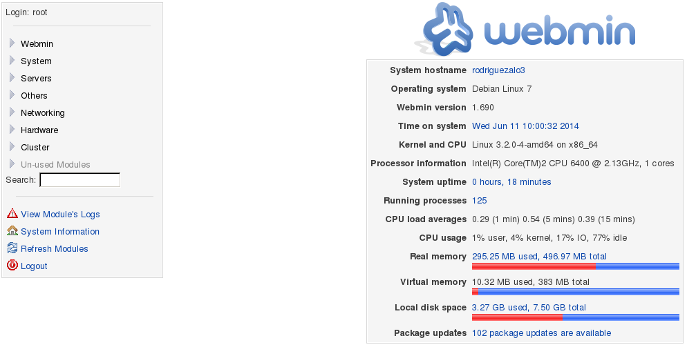

A1: Registro de eventos local
- Módulo: Sistemas Operativos
- Título del trabajo A1: Registro de eventos local
- Componentes del grupo: Tomás Rodríguez Alonso
- Curso Académico: 2013/2014
- Fecha de entrega: 12 Junio de 2014
--> En esta práctica veremos como toda actividad queda registrada en el sistema mediante una serie de configuraciones. Veamos:
Debemos activar unas directivas de seguridad, para auditar los inicios de sesión al sistema:
Poner como nombre NETBIOS de la máquina "1er-apellido-del-alumno"+2 => Windows 7.
Reiniciamos y creamos los usuarios alu1, alu2 y alu3.
A continuación realizamos las siguientes acciones:
Entrar al sistema con alu1 de forma correcta.
Intentar entrar con alu2 poniendo la clave mal.
No entrar con alu3.
Podemos apreciar que correctamente se han registrado los eventos.
Exportar los eventos a ficheros CSV. Incluir fichero en la entrega con el nombre "registro-windows.csv".
Para este paso usaremos Debian.
Cambiamos el nombre de la maquina "hostname "1er-apellido-alumno"+3"
Instalamos el Webmin en este caso descargando el paquete deb de la web de Webmin. Para instalarlo usamo dpkg. Veamos ejemplo: "dpkg -i webmin_1.690_all.deb"
Al instalarlo hemos tenido unos problemas en las dependencias de paquetes, entonces ejecutamos el siguiente comando para resolverlas: "apt-get install -f".
Veamos como arregla el proceso:
Iniciar el servicio Webmin con el comando "/etc/init.d/webmin start"
A continuacion accedemos al programa Webmin desde un navegador, lo abrimos y escribimos la siguiente URL: "https://localhost:10000"
La contraseña es la que tengamos para iniciar sesion de nuestro Debian y usuario "root"

Vamos a analizar los ficheros de log con la herramienta anterior. Para ello vamos a las opciones del menú "System -> System Log".
Incluimos captura de pantalla.
Vamos a realizar una monitorización local de nuestro equipo GNU/Linux, con rotación de log's.
3.1 Configuración de Syslog
Consultar el fichero /etc/rsyslog.conf. y añadimos nueva línea para grabación de nuestros eventos
Como recurso.prioridad usaremos local0.*

Como fichero de log usaremos "/var/log/nombrealumno/prueba-local.log".
Con el usuario root, crear el fichero /var/log/nombredelalumno/prueba-local.log vacío.
Ahora debemos reiniciar el servicio rsyslog, para que se recargue la nueva configuración.
/etc/init.d/rsyslog start
3.2 Comprobar Rsyslog
cat /var/log/nombredelalumno/prueba-local.log: Esto nos muestra que el fichero de log está vació por el momento.
Crear varios registros mediante el comando logger, usando varias prioridades diferentes y otros valores. Por ejemplo, probar los parámetros de logger -i, -t, etc.
El programa logrotate permite hacer rotación de los ficheros de log.
Fichero de configuración principal es /etc/logrotate.conf. Además existen ficheros de configuración auxiliares en /etc/logrotate.d.
Ahora vamos a configurar logrotate para generar rotaciones de nuestro fichero de log. Para ello crearemos el fichero /etc/logrotate.d/nombre-del-alumno
con el siguiente contenido:
root@debian:~# more /etc/logrotate.d/tomas
/var/log/tomas/prueba-local.log /var/log/tomas/prueba-local.*.log {
size = 1k
rotate 3
missingok
compress
notifempty
}
Vamos a generar muchos mensajes de log en el fichero de registro de eventos
Podemos invocando el comando siguiente para aumentar el tamaño del registro de log con la información contenida en un fichero de texto: logger
-p local0.notice -t ETC-MOTD -f /etc/motd
Para que se dispare la rotación de log (logrotate) automáticamente podemos reiniciar el equipo. Sin reiniciar el equipo, podemos ejecutar manualmente el programa de rotación
logrotate de la siguiente forma: /usr/sbin/logrotate -f /etc/logrotate.conf